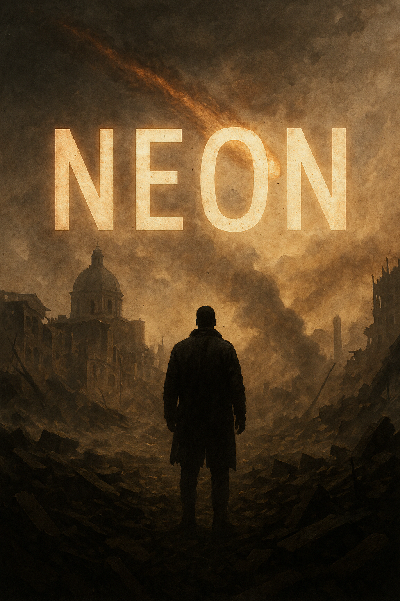

In un futuro dove il cielo è squarciato da rovine celesti, Bologna si erge come guardiana di un segreto. Riven, sopravvissuto tra le macerie, raccoglie speranza dove sembra non essercene più.
Mi chiamo Riven. Bologna è un relitto di macerie e cenere, ma è ancora in piedi, come me. Un asteroide ha rivelato il volto crudele dell’universo, scaraventando fuoco e polvere sui nostri cuori.
Le strade, un tempo fiumi di vita, sono ora crepe profonde di disperazione. Il cielo brilla di un arancione avvelenato, e ogni respiro è un atto di ribellione contro il destino.
Resistere è un atto di amore. Ogni seme che spunta, ogni parola sussurrata, sfida l’oblio e infonde vita nel domani. Riven troverà la forza di proteggere ciò che ama, perché finché esiste un cuore che batte, c’è speranza.